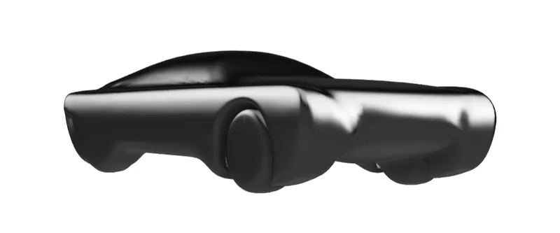
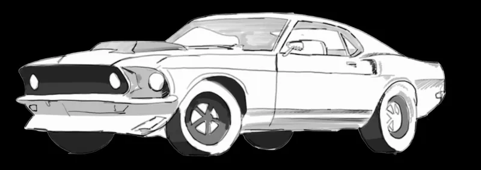
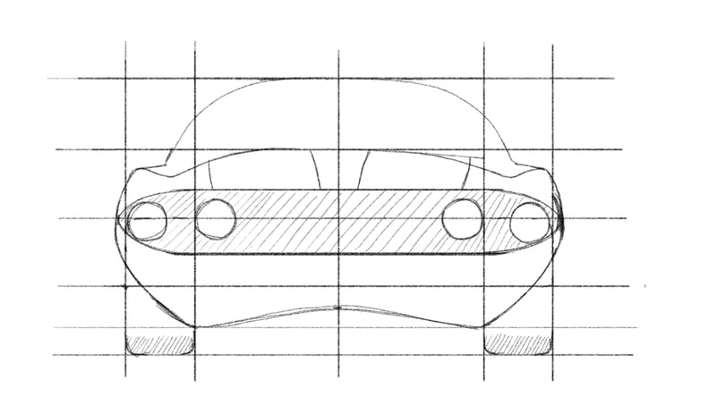
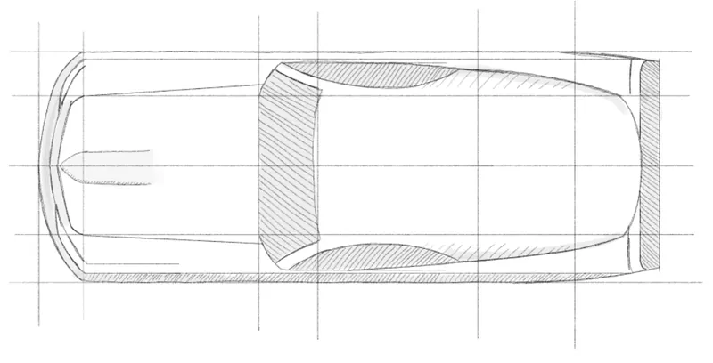
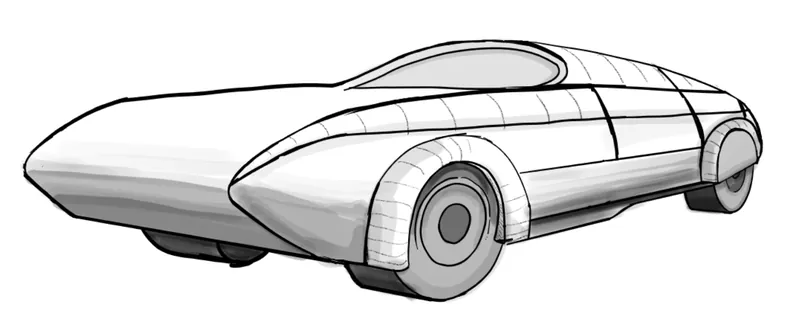
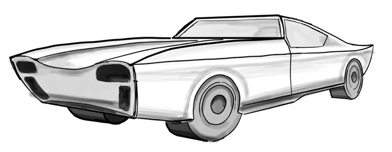
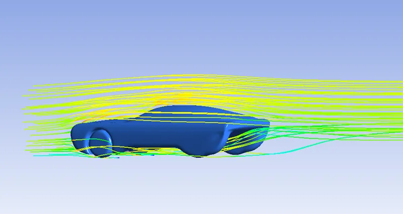
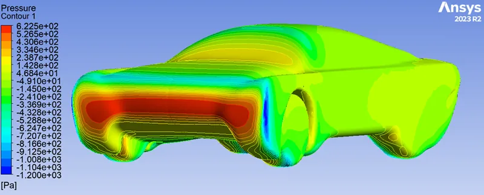

01 · Research
Keep the muscle, lose the drag
High-power leisure cars from 1952 to 1971 were analysed, with a focus on the late-1960s Ford Mustang. Keeping the essence of a muscle car was as important as the numbers.
A late-1960s muscle car, redesigned to cut drag without losing its character.

Redesign a vintage American muscle car for aerodynamic performance without losing its character.
Teardrop body, rear-wheel spats and wheel-arch vents to cut flow separation and wake turbulence.
CFD, hand-calculated drag and wind-tunnel tests compared simulation against experiment.
01 · Research
High-power leisure cars from 1952 to 1971 were analysed, with a focus on the late-1960s Ford Mustang. Keeping the essence of a muscle car was as important as the numbers.



02 · Concepts
A teardrop plan, rear-wheel spats, wheel-arch vents, a smooth bonnet that keeps the boundary layer attached and a shallower windscreen rake all reduce separation and wake turbulence.


03 · Analysis
Ansys CFD mapped pressure and velocity around the body and isolated points of separation, stagnation and turbulence for the next iteration.
Drag coefficient was estimated by hand, then a 1:20 model in the wind tunnel compared the simulation with experiment.


